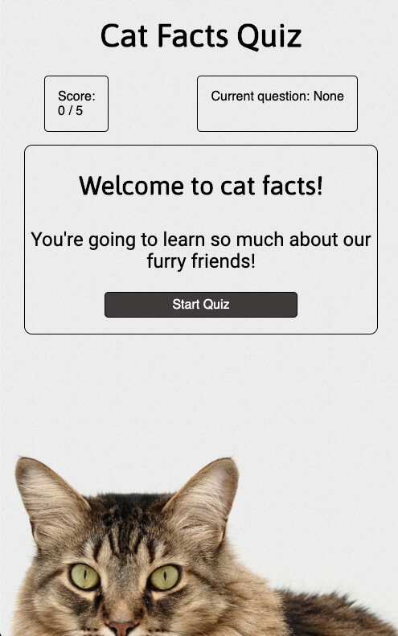
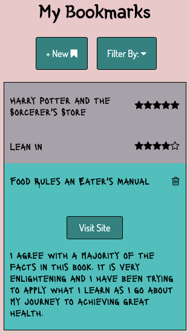

Projects Made By Me

Skills used: HTML, CSS, JavaScript
Are you a cat lover and want to test your knowledge?
I think you should consider taking this Cat Quiz to learn more about them!

Skills used: HTML, CSS, JavaScript, jQuery, modules
Want to keep track of all the books you read and what you thought of them?
This is the app for you! Keep track of your books by giving them a rating, which you can filter, write a description, and keep a link just in case anyone is curious where to get the book.